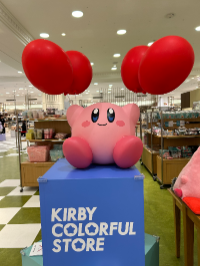

カービィカフェは、現在、東京都墨田区押上にある「カービィカフェ TOKYO」と福岡県福岡市博多区にある「カービィカフェ HAKATA」(Kirby Café PETITを除く)の二店舗が存在している。キャラクターを模した料理や実際に登場する料理がメニューになっており、カービィのことを知れば知るほど楽しくなるカフェである。基本的には予約制だが、空いていれば立ち寄ることもできる。店内にはそこら中にカービィとワドルディの姿が見られ、自由に歩いて撮影する事が可能。誕生日のお祝いを事前にお願いすると、店内BGMがバースデーソングになり(変更可能)店員さんがあり得ない声量で店内中に誕生日なことを知らせてくれる。
Goods
KIRBY play with WADDLEDEE!カービィと仲良さそうに絡んでいるグッズがそろっている。背景の青緑にピンクとオレンジが映えており、オシャレにもふっているグッズの一つだと思う。かなり好き

KIRBY COLORFUL STOREかなり様々なところでポップアップが行われていた印象がある。自分で飛べるのに風船をわざわざ持っていてかわいい。カラフルストアという名の通り、赤と青緑、黄色などといった配色で構成されたグッズが多い。しかし全体的な色味としてはビビットというより、ディープトーンやダルトーンに近いため、大人っぽさも感じる。このシリーズが一番好き。